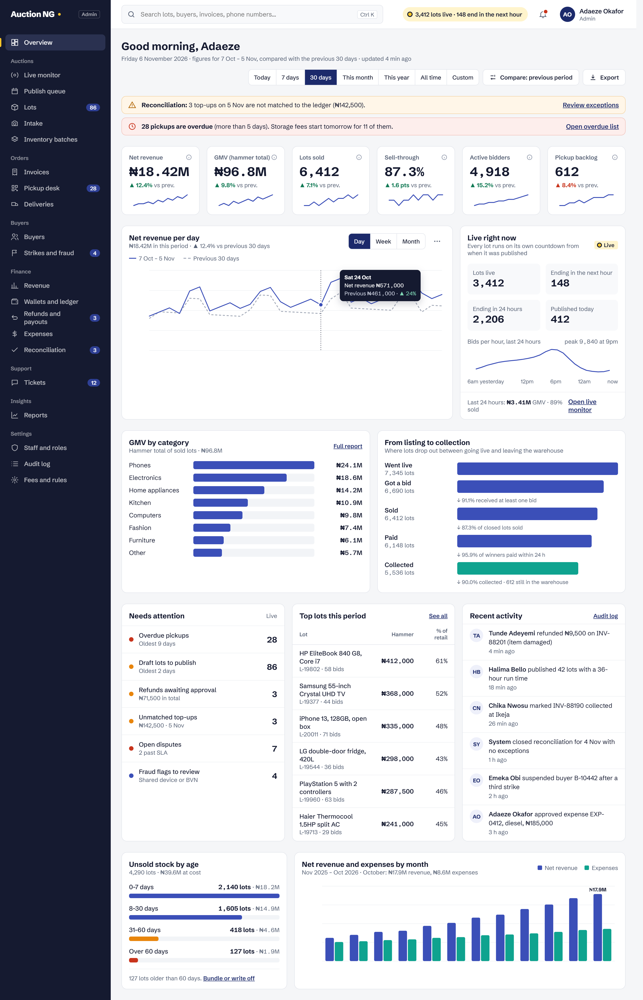
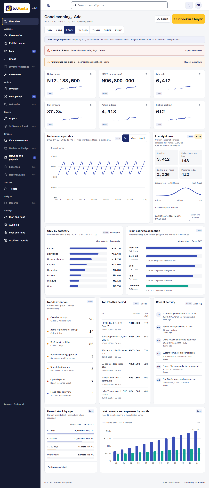
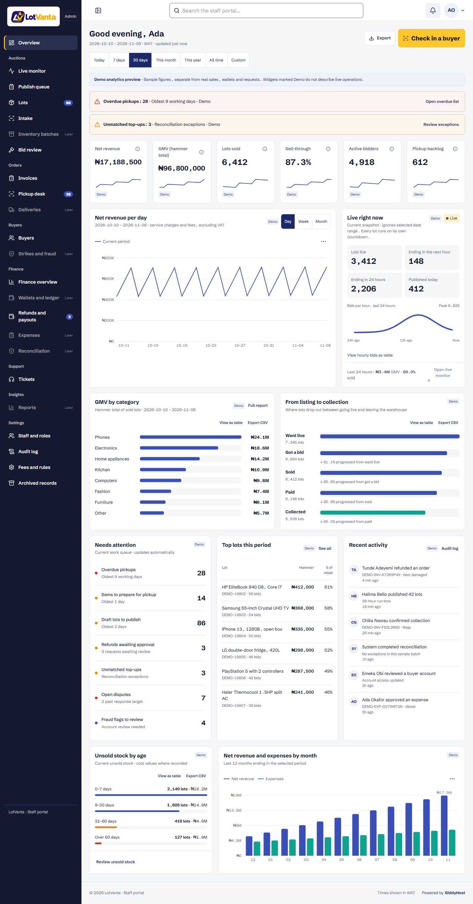

Reference and final layouts side by side. Sample analytics are explicitly labelled. Missing production aggregate sources and planned destination pages are documented in the specification.
1280px
Approved reference (legacy wordmark)

LotVanta implementation - labelled local demo

1440px
Approved reference (legacy wordmark)LotVanta implementation - labelled local demo

1920px
Approved reference (legacy wordmark)LotVanta implementation - labelled local demo